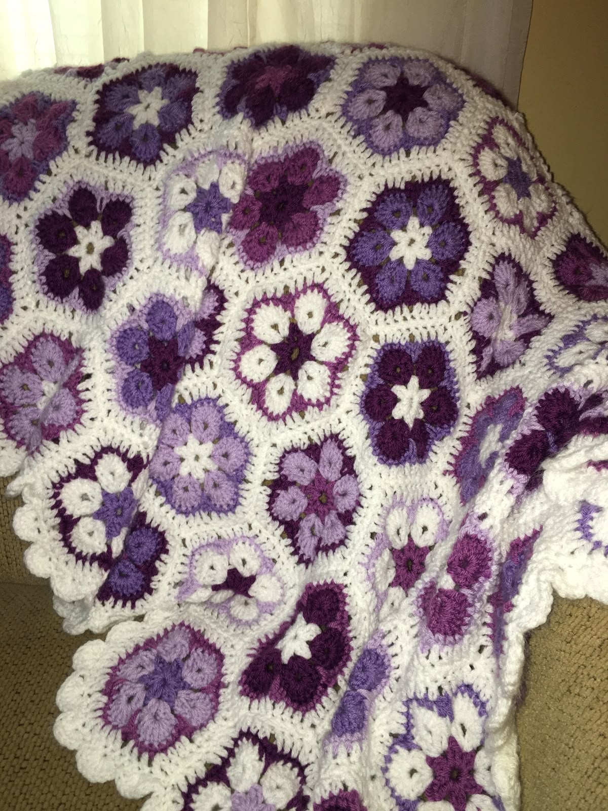
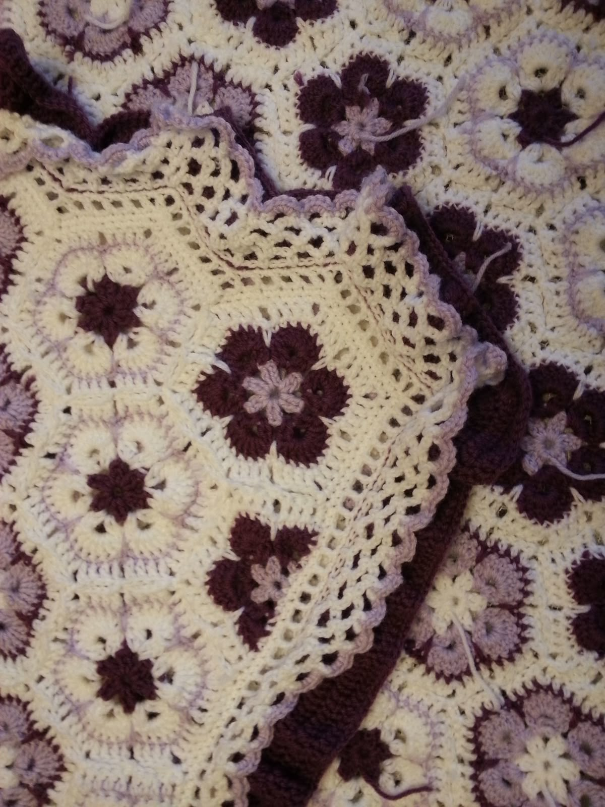
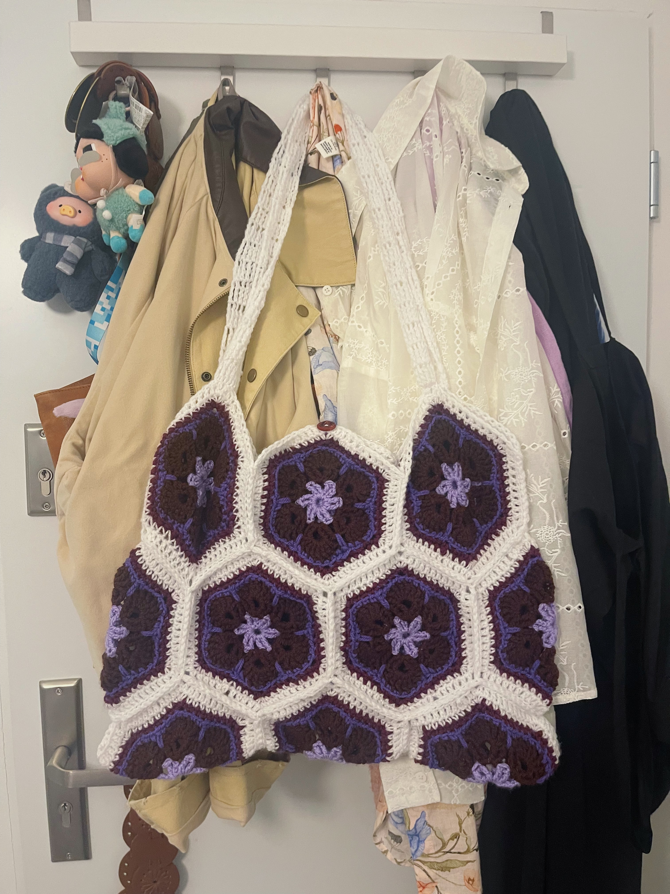
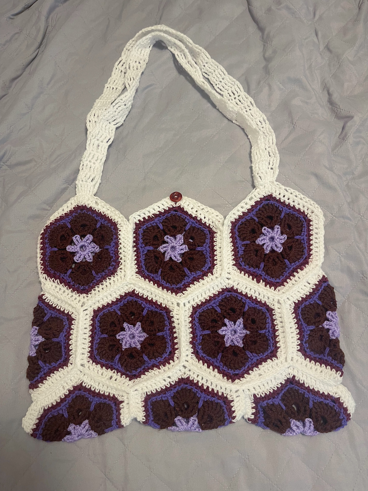

I've been wanting to try out the very popular "African Flower" granny square/hexagons. I'm dying to make a blanket based on this inspo pic, but I didn't want to take on such a hefty project while abroad, so I'm shrinking it down to a tote (for this project only, I'll prob make this blanket eventually.)
 I think I'm going to use this inspo image to shape the tote and sew the hexagons together.
I'm using this pattern to make the African Flowers squares, and after experimenting with a couple edits, I added a single crochet row then a half-double crochet row for the white border.
The sample hexagon I first made was nasty, the tension was completely whack, so I was worried about continuing with the project. It turned out that I had read the pattern incorrectly, so once I corrected my mistakes, the hexagons came out WAY better. I've been crocheting the hexagons in two batches of five, and I'm finishing off the last batch of six. After that, I get to crochet a strap and put everything together!

I ended up going in a different direction when putting the tote together, using the original inspo pic was way too confusing. This is how I want it to come together, but I'm connecting the hexagons by crocheting slipstitches, and that was a bad decision. Putting the bag together that way, rather than just sewing it, is WAY harder, and I'm constantly having to undo what I just did.

Everything is assembled, and now for the dreaded final step: weaving in loose ends.
All done! I'm actually really happy with how it turned out :)
 